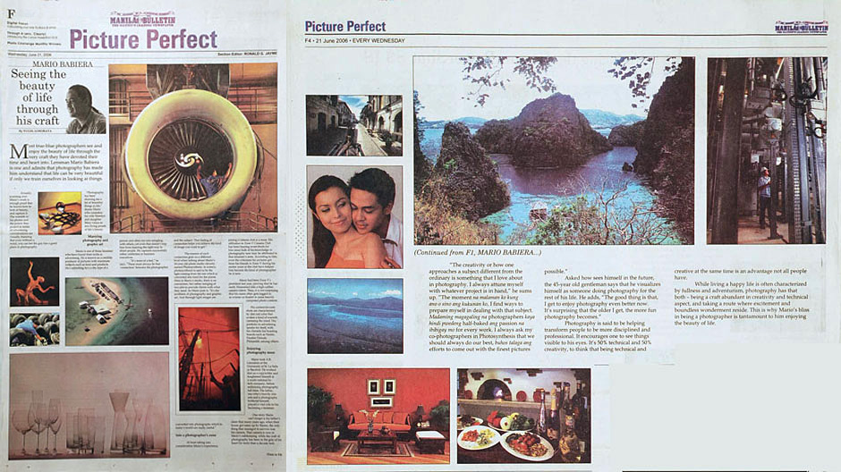

About Aljon Caranog Photography
VISION
PhotoSynthesis strives to become a leading photography studio known for its professionalism,
high-quality workmanship and customer-centered service.
MISSION
PhotoSynthesis is dedicated to deliver total quality and personalized service to customers. We achieve this through cohesive teamwork with all staff and focus on customer satisfaction.
CORE VALUES
The core values that guide PhotoSynthesis are:
Customer and Employee Satisfaction
Professionalism
Integrity
Continuous Improvement
SERVICES
PhotoSynthesis aims to be a photography company trusted for every kind of photography work. If there’s something about Mario Babiera, it’s that he is a master of his craft.
Aerial Photography
We can help you capture a new perspective on your photography project through high-resolution drone photographs.
People Photography
We produce people photography results that you’ll be proud to display or use for your company profile.
Industrial Photography
Mario Babiera is an established industrial photographer. His work on The Journey of Malampalaya Project is his crowning industrial photography achievement.
Commercial/Advertising Photography
We can produce ready-to-use advertising material for your upcoming campaign. Our creativity and experience make us the ideal marketing media partner.
Corporate Photography
Mario Babiera is a master of corporate portraits. We want to show industry leaders in the best light.
.